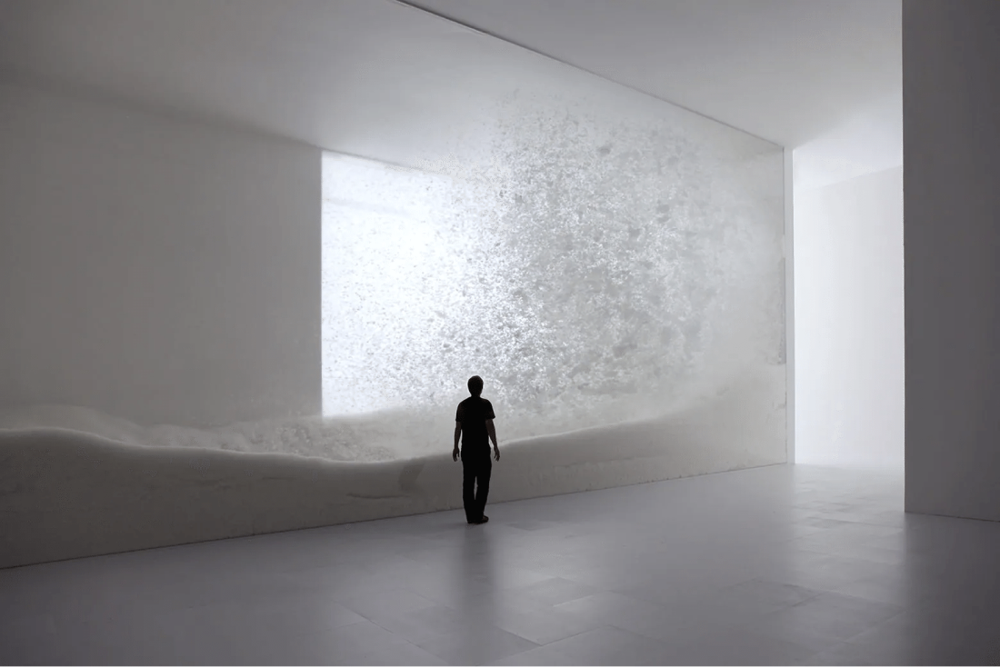
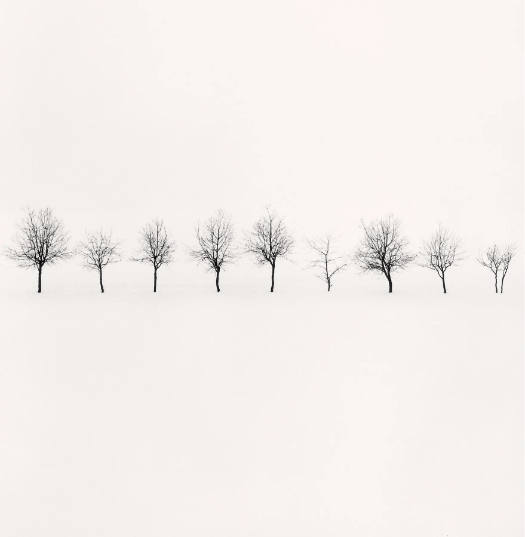
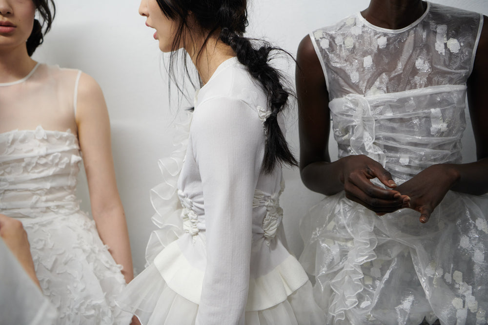
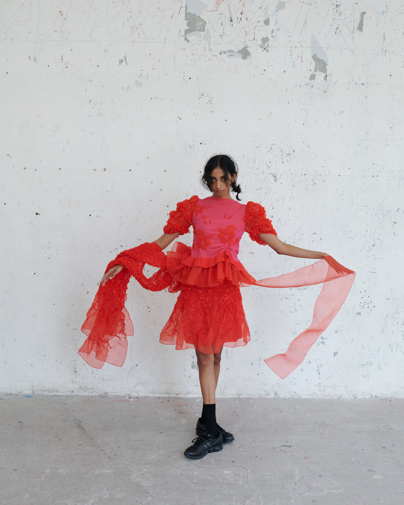

视觉图鉴 / 001清冷Cool Detachment a.Snow · Tokujin Yoshioka b.Nine Trees · 2004 情感拥有自己的世界。空间 · 留白 · 距离 清冷1 / 2Coquette →
视觉图鉴 / 002Coquette柔软的细节，靠近身体。 a.Cecilie Bahnsen · SS24 b.Faraway, so close. 薄纱褶皱系结从轮廓，走近材质。 ← 清冷2 / 2Coquette